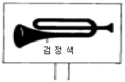
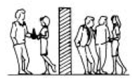
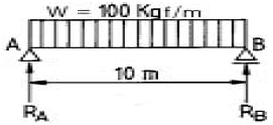
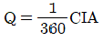
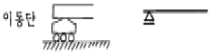
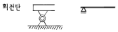
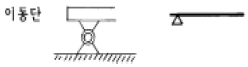
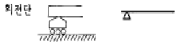

조경기사 (2005-03-20 기출문제)
1과목: 조경사
1. 누각과 정자의 차이점으로 옳지 않은 것은?
- 누각은 공적으로 이용하던 공간이고 정자는 사적으로 이용하던 공간이다.
- 누각의 평면은 일반적으로 장방형으로 나타나는데 비해 정자는 장방형을 비롯하여 다양하다.
- 누각은 대부분 고상식인데 비해 정자는 대체로 저상식으로 되어 있는 경우가 많다.
- 누각은 대부분 방이 없는데 비해 정자는 방이 있다.
(정답률: 53%)

2. 근대적인 보존주의 창시자이며 생태물리학적 측면에서 인간과 자연의 협력관계를 강조한 사람은?
- George Perkins March
- Frederic L. Olmsted
- Daniel H. Burnham
- Henry Wright
(정답률: 37%)
3. 중국 한나라 때의 태액지에 대한 설명으로 틀린 것은?
- 못 속에 봉래, 영주, 방장의 세 섬을 축조하였다.
- 지반에는 청동이나 대리석으로 만든 새와 짐승 등의 조각을 배치하였다.
- 못 속에 여러 진귀한 새와 짐승을 사육하고 많은 기이한 식물을 심었다.
- 신선사상을 반영한 정원양식이다.
(정답률: 48%)
4. 한국 정원의 특징으로 잘못 설명된 것은?
- 주택정원이건 별서정원이건 공간 속에 여백이 많고 앞이 트여 답답하지 않다.
- 담은 낮고 나무는 측면이나 귀퉁이에 주로 식재했다.
- 수목은 인공적인 조형처리를 별로 하지 않았다.
- 수목은 수심양성의 지표가 되는 송(松), 백(栢), 죽(竹) 등 상록수를 주로 심었다.
(정답률: 72%)
5. 고대정원에 관한 설명으로 틀린 것은?
- 아트리움(Atrium)은 주로 상업상의 타합이나 일반내객(一般來客)을 응대하는 자리로 이용 되었다.
- 페리스틸리움(Peristylium)은 호외실(out-door livingroom)로 사용 되었다.
- 로마에는 포룸(Forum)이 설치되었다.
- 지스터스(Xystus)는 무열주 중정(中庭)으로 포장이 아름답다.
(정답률: 69%)
6. 한자의 식물이름이 잘못 번역된 것은?
- 괴(槐) - 회화나무
- 부용(芙蓉) - 연꽃
- 오(梧) - 벽오동나무
- 회백(檜栢) - 측백나무
(정답률: 24%)
7. 중국 소주지방의 4대 명원 가운데 수경관이 전체 공간의 60%를 차지하고 있는 정원은?
- 졸정원
- 유원
- 사자림
- 창랑정
(정답률: 63%)
8. 다음 연결된 사항 중 관계가 먼 것은?
- 이태리 정원 - 보볼리(Boboli) 정원
- 독일 정원 - 실용, 경제, 미
- 화란 정원 - 파티오(Patio)
- 프랑스 - 앙드레 르 노트르(Andre' Le Notre)
(정답률: 29%)
9. 일본의 조경사에 나오는 석립승(石立僧)에 대한 설명 중 타당한 것은?
- 연못에 놓여진 입석군을 지칭한다.
- 정토사상과 같은 사상적 배경에 의해 헤이안시대부터 나온 정원이다
- 정치사적으로 무사계급 중 하나이다.
- 절에서 정원을 조영하는 사람을 말한다.
(정답률: 57%)
10. 조선시대에는 풍수설에 따라 택지(宅地)를 선정했기 때문에 안채 뒤에 경사지가 있는 경우 이 경사지는 토사의 유출을 막기 위해 계단식으로 다듬고 장대석으로 굳혔는데 이 자리를 흔히 무엇이라고 불렀는가?
- 후원(後苑)
- 석계단(石階段)
- 석가산(石假山)
- 화계(花階)
(정답률: 82%)
11. 1893년 시카고시에서 열린 세계 콜롬비아 박람회는 조경사상 역사적으로 그 의의가 크다. 다음 중 그 영향이 아닌 것은?
- 도시미화운동이 활발해졌다.
- 도시계획의 새로운 전문 분야로 발달했다.
- 전원도시운동이 크게 일어났다.
- 조경계획의 수립에 있어서 타분야와의 공동작업이 활발해졌다.
(정답률: 53%)
12. 다음 동양의 정원에 대한 설명으로 적합하지 않은 것은?
- 직접적인 자연의 관찰과 회화의 원칙에 기반을 두고 있다.
- 고대에는 임천형의 정원이 공통적으로 출현하고 있다.
- 사의주의에 기반을 두고 자연을 재현하고 있다.
- 유교, 불교사상은 정원발달에 크게 영향을 미치었다.
(정답률: 18%)
13. 다음 중 향원지가 있는 후원을 가지고 있는 궁은?
- 경복궁의 어원
- 창덕궁의 어원
- 창경궁의 어원
- 덕수궁의 어원
(정답률: 58%)
14. 영국정원의 공허하고 단조로움을 개탄해 풍경식 정원에 중국적 취향을 받아드리도록 제안한 사람은?
- 차알스 브릿지맨(Charles Bridgeman)
- 윌리엄 캔트(William Kent)
- 란셀로트 브라운(Lancelot Brown)
- 윌리엄 쳄버(William Chambers)
(정답률: 82%)
15. 제네랄리페(Generalife)정원의 설명 중 옳지 않은 것은?
- 높이 솟은 정원 이라는 의미이다.
- 커낼의 파티오가 있다.
- 3개의 테라스로 구성되어 있다.
- 각 테라스는 계단으로 연결되어 있다.
(정답률: 26%)
16. 프랑스의 베르사이유 궁원에 대한 설명으로 잘못된 것은?
- 원래는 수렵지였으나 루이14세 때에 정원으로 꾸민 것이다.
- 정원설계는 궁정조경가 니콜라 푸케(Nicholas Fouquet)가 맡았다.
- 맨 처음에 완성한 정원부분은 감귤원(Orange rie) 이었다.
- 십자형의 대 커넬(Canal)이 중심축을 이루고 있다.
(정답률: 73%)
17. 옥호정(玉壺亭)은 누구의 별장이었는가?
- 김시습(金時習)
- 신효창(申孝昌)
- 김조순(金祖淳)
- 윤선도(尹善道)
(정답률: 58%)
18. 중국적인 조경요소인 소여산(小廬山) ·원월교(圓月橋) ·서호제(西湖堤)가 배치되어 있는 일본 정원은?
- 대선원(大仙院) 서원
- 소석천 후락원(小石川 後樂園)
- 수학원 이궁(修學院離宮)의 상다옥원(上茶屋園)
- 육의원(六義園)
(정답률: 48%)
19. 고대 그리이스의 조경이 훌륭한 문명에 비해 미약한 원인 중 맞지 않은 것은?
- 기후적인 영향으로 식물재료가 다양하지 못하기 때문이다.
- 반복되는 내·우외환으로 조경에 신경을 쓸 여유가 없었다.
- 민주주의가 발달하여 조형 예술이 공공의 것이라는 인식 때문이다.
- 기복이 많은 지형이 정원 발달의 장해요소가 되었다.
(정답률: 25%)
20. 근대적 도시 공원의 효시로서 영국에서 선거법 개정안의 통과에 의해 실현된 최초의 공원은?
- 하이드 파크
- 그린 파크
- 제임스 파크
- 비큰히드 파크
(정답률: 54%)
2과목: 조경계획
21. 다음 중 자연 형성 요소의 상호 관련성 중 가장 밀접한 관계를 가지는 요소들은?
- 지형 - 기후
- 지질 - 기후
- 지질 - 식생
- 토양 - 야생동물
(정답률: 46%)
22. 자연공원에 대한 설명이 틀린 것은?
- 자연공원법에 의거, 국립공원, 도립공원, 군립공원으로 분류된다.
- 도시공원에 비해 보통 광대한 면적을 요구함과 인공적 요소를 가능한 한 배제한다.
- 자연공원 내 우수한 자연 경관지 주변으로 교통운송 노선을 계획하여 차량내부에서의 조망으로 훼손을 억제한다.
- 주로 국유지·공유지 면적이 크고, 지형경관미가 수려한 곳에 지정한다.
(정답률: 53%)
23. 자연공원 내 용도지구 중 공원 입장객에 대한 편의 제공 및 공원의 보호, 관리를 위해 지정되는 곳은?
- 자연보호지구
- 자연환경지구
- 농어촌지구
- 집단시설지구
(정답률: 37%)
24. 행락지의 생태적 수용력을 설명한 것으로 틀린 것은?
- 행락지의 식생, 토양, 수질 등에 악영향이 없는 이용수준이다.
- 행락경험을 최대한 만족시킬 수 있는 이용수준이다.
- 행락지의 생태계가 행락이용의 영향을 극복할 수 있는 이용수준이다.
- 행락지가 생태적으로 재생할 수 있는 수준의 이용자수 이다.
(정답률: 60%)
25. 우리나라의 전통 공간인 마당의 분류 중 가장 공공성이 강한 장소는?
- 안마당
- 별당마당
- 사랑마당
- 사당마당
(정답률: 50%)
26. 버라인(Berlyne)이 설명한 미적 반응의 순서로 맞는 것은?
- 자극선택 → 자극 → 자극탐구 → 자극해석 → 반응
- 자극 → 자극선택 → 자극탐구 → 자극해석 → 반응
- 자극 → 자극탐구 → 자극선택 → 자극해석 → 반응
- 자극선택 → 자극 → 자극해석 → 자극탐색 → 반응
(정답률: 50%)
27. 외부공간은 바닥면, 벽면 및 천정면으로 한정된다. 다음중 공간 한정 요소로 적합하지 않은 것은?
- 굴뚝
- 포장
- 담장
- 생울타리
(정답률: 58%)
28. 도시의 상징공간으로서 성격이 강하며 집회, 대화, 연설 등의 공공적인 기능이 가장 높은 광장은?
- Agora계 광장
- Plaza계 광장
- Park계 광장
- Street계 광장
(정답률: 58%)
29. 공해, 재해 및 사고의 방지, 완화를 위해 설치되는 도시공원법상의 오픈스페이스는 무엇인가?
- 근린공원
- 도시자연공원
- 완충녹지
- 경관녹지
(정답률: 77%)
30. 다음 중 우리나라 자연공원 지정 기준이 아닌 것은?
- 자연경관
- 위치 및 이용편의
- 토지소유
- 면적
(정답률: 12%)
31. 정밀토양도에서 토양의 명칭을 'Gk B3'라고 명명하였을 경우 'GK' 는 무엇을 뜻하는가?
- 침식정도
- 경사도
- 토성
- 비옥도
(정답률: 75%)
32. 조경계획을 위한 설문지의 성격으로 올바르지 못한 것은?
- 앞 부분의 질문이 나중의 질문에 답하는데 영향을 줄 수 있다.
- 30분 이상 걸리는 설문이라면 응답자는 지루하게 느낀다.
- 통계적 처리를 통하여, 계량적 결론을 얻기 어렵다.
- 표준화된 설문지를 여러 응답자에게 반복적으로 사용함으로써 여러 다른 사람의 응답을 비교할 수 있다.
(정답률: 79%)
33. 도로 시설 녹지 중 위치를 식별하기 위하여 사용하는 식재는?
- 시선유도식재
- 차광식재
- 녹음식재
- 지표식재
(정답률: 77%)
34. 문화재 및 중요 시설물의 보호와 보존을 위하여 필요한 때 지정하는 국토의계획및이용에관한법률상의 지구(地區) 명칭은?
- 경관지구
- 미관지구
- 보존지구
- 시설보호지구
(정답률: 56%)
35. 이용 후 평가(P.O.E)의 기본적 목표가 아닌 것은?
- 우수 작품 홍보
- 인간 행태 이해 증진
- 기존 환경개선을 위한 평가자료 제공
- 새로운 환경 창조를 위한 자료 제공
(정답률: 52%)
36. 다음 중 우리나라 도시공원법에 규정된 공원시설이 아닌 것은?
- 문화시설
- 교양시설
- 유희시설
- 휴양시설
(정답률: 알수없음)
37. 회전율(turnover ratio)에 관한 설명 중 가장 적합한 것은 ?
- 최대일 이용 이외에 나타나는 시설과잉 현상을 고려한 시설 교체율
- 자원의 이용범위내에서 이용객의 사용빈도를 추정하여 산정한다.
- 체류시간이 짧은 것은 회전이 느리고, 체류시간이 긴 것은 회전이 빠르다.
- 1일중 방문객수가 가장 많은 시점에 대한 최대일 이용객 수의 비율
(정답률: 47%)
38. 보행자 전용도로(pedestrian mall)의 설치 목적으로 보기 어려운 것은?
- 보행 교통량의 합리적 처리
- 매력있는 보행 환경의 조성
- 보행자의 안전성
- 주차공간의 효율적 확보
(정답률: 75%)
39. 보행자 공간을 형성하는 1차적 요소 가운데 하나로서 천개면이 있고 2층 이상의 높이를 갖는 복도 또는 가로와 같은 옥내 공공 공간을 무엇이라고 하는가?
- 아케이드(arcade)
- 갤러리아(galleria)
- 롯지아(loggia)
- 플라자(plaza)
(정답률: 50%)
40. 유원지의 계획 및 설계 특성을 기술한 것 중 적합하지 않은 것은?
- 시설물에 의한 레크레이션 형태가 대부분이므로 시설물의 집약적 배치가 바람직하다.
- 영리추구를 겸할 수 있는 공간 구성 및 시설물 배치도 고려해야 한다.
- 레크레이션 활동에 능동적으로 참여할 수 있는 방안이 강구되어야 한다.
- 유원지는 도시공원시설이므로 자연경관보다 시설물의 배치가 우선되어야 한다.
(정답률: 42%)
3과목: 조경설계
41. 수경시설물에 수련 등의 수생식물을 식재할 경우 잘못된 것은?
- 이 경우 수조의 총 깊이는 60cm이상이 되어야 한다.
- 연못의 넓이 0.7제곱미터에 한 포기 정도를 심도록 한다.
- 겨울이나 청소할 때 물을 배수할 수 있도록 배수공을 만들어야 한다.
- 수련의 경우는 1일 1-2시간의 일조량이 확보되면 생육이 가능하므로 응달진 곳에 만들어도 무방하다.
(정답률: 31%)
42. 도로 가용지 상정시 피해야 할 지역으로 거리가 먼 것은?
- 기존마을
- 급경사지
- 황폐지
- 문화유적지
(정답률: 50%)
43. 다음 중 유희시설 설계시 고려할 사항이 아닌 것은?
- 평탄지, 경사지 등의 지형특성에 맞는 이용을 고려한다
- 편리성, 예술성보다 안전성을 더욱 고려해야 한다.
- 놀이기구는 가능한 한 다양하게 많은 기구를 배치하도록 한다.
- 이용계층(예, 유아, 소년 등)에 맞는 놀이시설을 배치하도록 한다.
(정답률: 59%)
44. 제도용구(연필, 삼각자, T자 등)를 사용한 도면제도기법 가운데 연필 사용방법으로 옳지 않은 것은?
- 선을 그을 때 연필은 도면에 45°이하로 유지하여 사용한다.
- 연필 쥔 팔을 몸쪽으로 당기면서 제도한다.
- 연필은 아래쪽으로 힘을 유지하며 사용한다.
- 연필은 엄지손가락에 힘을 주어 잡고, 회전시키면서 제도한다.
(정답률: 64%)
45. 다음 중 시각적 선호를 결정짓는 변수에 해당하지 않는 것은?
- 물리적 변수
- 상징적 변수
- 개인적 변수
- 환경적 변수
(정답률: 40%)
46. 다음 중 공원 내 공중화장실의 계획시 고려해야 할 사항으로 옳지 않은 것은?
- 가능한 한 남·녀용을 구분하고, 입구도 분리하는 것을 원칙으로 한다.
- 채광과 환기가 잘되도록 한다.
- 다양한 소재와 색상을 이용하여 내부공간을 밝게 만든다.
- 입구를 통하여 대변소의 문이 잘 보이도록 설계한다.
(정답률: 59%)
47. 프로젝트의 계획방향이 설정되면 조사분석을 거쳐 계획설계로 진행된다. 다음 중 설계과정을 설명한 내용으로 가장 적당한 것은?
- 분석단계에는 부지의 조건을 고려하여 평면배치를 위한 땅가름 등의 분석 및 구상을 하게 된다.
- 분석내용을 종합하여 기본구상을 하게 되며 이 경우 아이디어의 상징적·추상적 표현을 위하여 도식화된 다이어그램이 많이 사용된다.
- 기본계획에서는 토지이용계획을 하게 되며, 동선계획과 녹지계획 등은 실시설계 단계에서 구체화하여 간다.
- 시공을 위한 실시설계는 분석단계 이전에 충분히 고려되어 있어야 한다.
(정답률: 34%)
48. 다음 중 설계도면 작성시 일반 치수나 문자에 적당한 글자의 크기는?
- 2 ∼ 2.5mm
- 3 ∼ 5mm
- 6 ∼ 10mm
- 11 ∼ 15mm
(정답률: 25%)
49. 다음 중 유사한 접근방법을 사용하여 시각적 효과를 분석 하였다고 보기 어려운 사람은?
- 틸(Thiel)
- 린치(Lynch)
- 할프린(Halprin)
- 아버나티와 노우(Abernathy and Noe)
(정답률: 29%)
50. 다음 그림은 도로가에 있는 안전표지이다. 바탕색으로 가장 적당한 것은?

- 노랑색
- 초록색
- 파랑색
- 보라색
(정답률: 50%)
51. 우리나라의 제도통칙에서는 몇 각법으로 작도함을 원칙으로 하고 있는가?
- 제 1각법
- 제 2각법
- 제 3각법
- 제 4각법
(정답률: 46%)
52. 조경은 이용성과 체험성을 동시에 만족시키는 응용예술이다. 디자인 과정에서 기능적 요구수준을 만족시키기 위한 원칙에 해당되지 않는 것은?
- 기술
- 비용
- 소비
- 감독
(정답률: 43%)
53. 다음 중 경관의 개념에 대한 설명으로 잘못 설명된 것은?
- 경관은 영어로 'Landscape'인데 이 'Landscipe'이라는 고어에서 나온 말이다.
- 'Landscipe'이라는 단어는 17세기 초에 전원풍경을 뜻하는 말로 사용되기 시작했다.
- 경관은 자연이든 인문이든 인간의 시각만으로 파악 가능한 모든 것을 의미한다.
- 경관의 일반적 개념에는 미의 개념은 제외된다.
(정답률: 12%)
54. 설계도면에 사용되는 선의 종류 중 실선의 용도가 아닌 것은?
- 해칭선
- 외형선
- 경계선
- 지시선
(정답률: 42%)
55. 도로설계에 있어서 기술적인 관점에서 적용해야 할 일반원칙과 가장 거리가 먼 것은?
- 교량은 미관상 하천과 사선이 되도록 설치한다.
- 노선은 가급적 완만한 경사를 이루도록 한다.
- 영구음지나 습한 곳은 피하고 통풍이 잘되는 곳을 선정한다.
- 도로의 평면선형은 가급적 직선으로 하며, 불가피한 경우 곡선부의 반경을 최대로 한다.
(정답률: 63%)
56. 색의 특성에 대한 설명 중 연결이 바르지 못한 것은?
- 진출색 : 황, 적 등의 난색계열
- 후퇴색 : 청, 녹 등의 한색계열
- 팽창색 : 난색계와 명도가 낮은 색 계열
- 수축색 : 한색계와 명도가 낮은 색 계열
(정답률: 55%)
57. 일반적으로 경관분석 기법과 그 분석 내용을 잘못 짝지은 것은?
- 기호화 기법 - 조망 시점에서 본 경관의 특성과 형태
- 계량화 방법 - 특이성비의 산출
- 사진에 의한 방법 - 지각횟수와 지각 강도의 산출
- 시각회랑에 의한 방법 - 경관우세 요소와 변화 요인의 파악
(정답률: 50%)
58. 노상주차장(路上 駐車場)의 설치기준으로 적합하지 않은 것은?
- 종단구배가 4%를 초과하는 도로에는 설치할 수 없다.
- 특별한 경우를 제외하고는 차도 폭원이 6m이상이 되는 도로에 설치한다.
- 도시 내 주간선 도로에는 설치할 수 없다.
- 평행 또는 90°주차방식보다 45°또는 60°주차방식이 더 효율적이다.
(정답률: 48%)
59. 한 물체를 멀리 떨어져서 볼 경우에 생기는 농담(濃淡)효과를 올바르게 설명하고 있는 것은?
- 물체의 햇빛이 비치는 부분은 더욱 밝게 그늘진 부분은 더욱 어둡게 보인다.
- 멀리 떨어질 수록 그늘진 부분은 일반적으로 더 밝게 더 파란색으로 보인다.
- 물체의 햇빛이 비치는 부분은 더욱 적색을 띄게 한다.
- 물체의 고유색 그대로 보인다.
(정답률: 13%)
60. 가로(街路)의 축선이 뚜렷하고, 특징있는 종점의 투시를 효과적으로 나타내는 투시도법은?
- 평행 투시법
- 2점 투시법
- 유각 투시법
- 3점 투시법
(정답률: 50%)
4과목: 조경식재
61. 다음 중 경관생태 개념상의 경계와 가장자리 구조에 영향을 미치지 않는 것은?
- 미기후
- 초식동물
- 토양
- 법적 규제
(정답률: 30%)
62. 잔디관리 작업 중 토양의 단립(單粒)구조를 입단(粒團)구조로 바꾸기 위한 것과 관련된 작업은?
- 잔디깎기
- 제초작업
- 관수작업
- 통기작업
(정답률: 24%)
63. 숲의 층위에 해당하지 않는 것은?
- 만경류층
- 초본층
- 관목층
- 아교목층
(정답률: 4%)
64. 다음 중 천이의 순서가 올바르게 나열된 것은?
- 나지 → 일년생초본 → 다년생초본 → 양수관목림 →양수교목림 →음수교목림
- 나지 → 일년생초본 → 다년생초본 → 음수교목림 →양수관목림 →양수교목림
- 나지 → 일년생초본 →다년생초본 → 양수교목림 →양수관목림 →음수교목림
- 나지 → 다년생초본 → 일년생초본 → 양수관목림 →양수교목림 →음수교목림
(정답률: 44%)
65. 산울타리용으로 가장 부적당한 수종은?
- Juniperus chinensis L
- Ligustrum obtusifolium S. et Z
- Cornus kousa B
- Hibiscus syriacus L
(정답률: 30%)
66. 도심지내에서 쾌적한 환경을 창출하기 위한 소생물권(Biotope) 확보를 위한 방안이 아닌 것은?
- 외래 식물보다 향토 식물을 많이 이용하여 배식해야 한다.
- 도심지 하천의 고수부지에는 수목만으로 배식해야 한다.
- 하천의 흐름은 하천이 가진 고유의 역할에 지장이 없는 범위 내에서는 굴곡이나 수심의 변화가 있도록 설계해야 한다.
- 야생 조류들이 좋아하는 열매를 가진 식물을 배식한다.
(정답률: 50%)
67. 동일한 지표면에서 성격이 다른 두 공간에 프라이버시를 주기 위한 최소한의 수목 높이는?

- 120cm
- 150cm
- 180cm
- 210cm
(정답률: 64%)
68. 공원의 원로나 건물 앞에 어울리는 화단의 형태는?
- 경재화단(border flower bed)
- 기식화단(assorted flower bed)
- 모전화단(carpet flower bed)
- 침상원(sunken garden)
(정답률: 45%)
69. 배식원리가 맞게 설명된 것은?
- 거친 것에서 고운 질감으로 나가는 것은 멀리 떨어져 보임
- 거친 질감만 사용하는 것이 멀리 떨어져 보임
- 좁은 면적일 때는 거친 질감을 많이 사용
- 좁은 면적일 때는 거친 질감과 고운 질감의 대비를 많이 사용
(정답률: 56%)
70. 수형(樹形)이 원추형(圓錐形)인 수종은?
- 전나무
- 측백나무
- 섬잣나무
- 박태기나무
(정답률: 47%)
71. 0.2N/m2와 0.1N/m2의 음압을 발생하는 음원에 접근하여 방음식재를 한 결과 소음이 감쇠되어 수음점에서는 50dB의 음압도를 나타냈다. 수림대에 의해 감쇠된 소음은 몇 dB인가?(단, 두 음압이 상호간에 간섭이 없는 조건에서)
- 11dB
- 21dB
- 31dB
- 41dB
(정답률: 28%)
72. 다음 조경수 중 대기오염에 대해 저항력이 강한 수종끼리 나열한 것은?
- 가시나무, 느티나무, 삼나무, 팽나무
- 아왜나무, 측백, 해송, 느릅나무
- 가이쯔까향나무, 벽오동, 갈참나무, 돈나무
- 녹나무, 동백나무, 식나무, 참식나무
(정답률: 48%)
73. Betula platyphylla var. japonica Hara 의 설명으로 틀린 것은?
- 극양수이다.
- 도시공해에 약하다.
- 반사열을 싫어한다.
- 수관이 치밀하여 녹음이 좋다.
(정답률: 30%)
74. 다음 중 근린공원의 식생 및 식재에 관한 설명 중 틀린 것은 어느 것인가?
- 정구장과 같이 정형적인 형태를 가지는 운동시설 주변에는 자연풍경식이나 자유식의 식재 기법을 적용하는 것이 바람직하다.
- 적절한 수종과 식물 재료를 선택하여 유지관리의 비용을 최소화 하도록 한다.
- 공간의 기능과 시설물의 속성에 따라 정형식, 자연풍경식의 기법을 도입하도록 해야 한다.
- 그 지역의 토성과 토양 습도에 적합하고 병해충과 공해에 강한 수종을 선택해야 한다.
(정답률: 65%)
75. 소교목이나 화목류의 규격을 측정할 때 공통의 측정 요소로 알맞은 것은?
- 가지의 수
- 1m 높이의 직경
- 근원직경
- 수관폭
(정답률: 17%)
76. 바람에 견디는 힘이 강한 수종은?
- 미루나무
- 아카시아나무
- 자작나무
- 느티나무
(정답률: 57%)
77. 방풍림 조성에 관한 설명 중 틀린 것은?
- 주풍과 직각이 되는 방향으로 정삼각형 식재에 의한 수림을 조성한다.
- 수림의 밀폐도가 80%이상이 되면 풍하쪽의 흡인 선풍과 난기류는 줄어든다.
- 수림대의 길이는 수고의 12배 이상이 필요하다.
- 수림의 밀폐도는 50 ~ 70% 정도가 방풍 효과의 범위를 넓힌다.
(정답률: 46%)
78. 우리나라에서 토양이 산성화되면 어느 영향물질의 함량이 감소되어 엽록소 형성에 영향을 미쳐 잎의 변색을 초래하는가?
- K
- P
- Mg
- N
(정답률: 19%)
79. 우리나라 수평적 삼림대 구분에 따른 특징별 수종으로 연결이 서로 잘못되어 있는 것은?
- 난대림 - Camellia japonica, Aucuba japonica
- 온대남부 - Cephalotaxus koreana, Pseudosasa japonica
- 온대중부 - Styrax japonica, Pinus densiflora
- 온대북부 - Lagerstroemia indica, Machilus japonica
(정답률: 37%)
80. 나지(裸地)가 된 야영장을 복구하기 위하여 식생공(植生工)의 작업을 실시하려고 한다. 토양 경도가 얼마 이상일 때 식물의 뿌리는 토양속으로 침투할 수가 없는가?
- 15mm 이상
- 19mm 이상
- 23mm 이상
- 27mm 이상
(정답률: 34%)
5과목: 조경시공구조학
81. 공원조명에 관한 설명으로 옳지 않은 것은?
- 공원에 사용되는 조명등은 정원등보다 튼튼해야 한다.
- 수목이나 시설물을 돋보이도록 하려면 나트륨등을 쓰는 것이 좋다.
- 공원조명은 보안성, 효율성, 쾌적성 등을 고려해서 설치한다.
- 조명용 각종 배선은 지하매설 방식이 바람직하다.
(정답률: 56%)
82. 차량도로의 수평노선에서 교각 60°, 반경 80m인 단곡선의 곡선장은 얼마인가 ?
- 64.6m
- 79.3m
- 83.7m
- 94.5m
(정답률: 37%)
83. 콘크리트의 배합 설계의 목적 중 틀린 것은?
- 균일한 콘크리트를 만들기 위해 콘크리트 치기에 지장을 주지 않는 범위내에서 최소 단위수량(가장 된반죽질기)의 콘크리트 배합설계
- 경제적인 면과 치기에 지장을 주지 않는 범위내에서 되도록 최소치수의 골재를 사용한 콘크리트 배합설계
- 기상작용, 화학적 작용에 대해 충분히 저항할 수 있는 내구성을 가진 콘크리트 배합설계
- 소요강도를 가진 콘크리트 배합설계
(정답률: 50%)
84. 등고선의 성질을 설명한 것이다. 잘못된 것은?
- 서로 다른 높이의 등고선은 도면안 또는 밖에서 도중에 소실되지 않는다.
- 등고선은 급경사지에서는 간격이 좁고 완경사지에는 간격이 넓다.
 경사에서 등고선은 낮은 등고선이 높은 등고선보다 더 넓은 간격이다.
경사에서 등고선은 낮은 등고선이 높은 등고선보다 더 넓은 간격이다.- 등고선 사이의 최단거리의 방향은 그 지표면의 최대경사로서 등고선에 수직방향으로 강우시 배수방향이 된다.
(정답률: 47%)
85. A는 회전지점이고, B는 이동지점인 단순보에 있어서 그림과 같은 등분포하중을 받을 때 각 지점에 생기는 반력은 얼마인가?

- 각각 10kg
- 각각 50kg
- RA=10kg과 RB=50kg
- RA=50kg과 RB=10kg
(정답률: 18%)
86. 공정관리에 있어서 최장경로(critical path)를 바탕으로 하여 표준시간, 표준비용, 한계시간, 한계비용의 4개와 간 접비 또한 고려하여 비용을 최소화하는 경제적인 일정계획을 추구하는 네트워크 수법은?
- CPM
- PERT
- GANTT
- RAMPS
(정답률: 45%)
87. 수목 식재공사시 지주목을 세우지 않을 때의 품의 계상은 어떻게 적용하는 것이 적합한가?
- 조원공의 품만 계산하고 보통인부의 품은 삭제한다.
- 식재품의 30%를 감한다.
- 식재품의 20%를 감한다.
- 식재품의 10%를 감한다.
(정답률: 36%)
88. 대형 불도저를 이용하여 자연상태의 지형을 절취운반하려 할 때 시간당 작업량 산출에 필요한 토량환산계수(f)는 다음 중 어느 것이 적합한가?
- 1
- L 값
- C 값
- 1/L 값
(정답률: 37%)
89. 다음 토공기계에서 굴착기계가 아닌 것은?
- 그레이더(Grader)
- 파워쇼벨(Power shovel)
- 불도져(Bulldozer)
- 드래그라인(Dragline)
(정답률: 25%)
90. 옥외계단에 대한 고려사항으로 틀린 것은?
- 계단높이가 2m이상 되면 중간에 계단참을 둔다.
- 옥내 계단보다 너비(踏面)와 높이를 크게 하는 것이 좋다.
- 계단면에도 배수를 위해 약간의 구배를 둔다.
- 경사는 최대 30 ~ 35°가 넘지 않도록 한다.
(정답률: 39%)
91.

공식을 설명하는 사항 중 틀린 것은?- Q의 단위는 m3/sec 로서 우수 유출량이다.
- C는 유출계수로서 유출량과 강우량의 비(比)이고, 항상 일정하다.
- I는 강우강도로서 단위는 mm/hr 이다.
- A는 배수면적으로서 단위는 ha 이다.
(정답률: 41%)
92. 연장 1㎞의 도로의 양편에 8m 간격으로 어긋나게 각각 2열로 가로수를 식재할 때 수목의 수량은?
- 498
- 500
- 502
- 504
(정답률: 22%)
93. 축척 1/300의 도면을 구적기(Planimeter)의 축척 1/600로 맞추고 측정 하였더니 1,246m2가 되었다면 실제적인 면적은 얼마인가?
- 311.5m2
- 623m2
- 2,492m2
- 4,984m2
(정답률: 31%)
94. 미세기포의 작용에 의해 콘크리트의 워커빌리티와 동결 융해에 대한 저항성을 개선시키는 것은?
- 포졸란(pozzolan)
- A·E제
- 지연제
- 촉진제
(정답률: 47%)
95. 모르타르를 사용하여 담장시공을 하였다. 다음 하중 중 어느 하중을 심하게 받으면 붕괴되겠는가?
- 설(雪)하중
- 풍(風)하중
- 수직등분포하중
- 자중(自重)
(정답률: 50%)
96. 담장의 붕괴 원인은 기초파괴와 전도인데 다음 중 기초 부동침하의 원인과 관계가 가장 먼 것은?
- 연약지반층
- 이질(異質)지반층
- 나무말뚝보강지반층
- 지하수위의 변동
(정답률: 50%)
97. 건설표준품셈의 적용기준 중 옳지 않은 것은?
- 수량의 계산은 지정 소수위 이하 1위까지 구하고 끝수는 4사5입 한다.
- 건설공사에 있어 수량의 단위 및 소수위는 공사의 성격과 난이도에 따라 설계자가 임의로 결정한다.
- 면적의 계산은 삼사법(三斜法) 또는 구적기로 한다.
- 수량은 C.G.S(centimeter. gram. second)단위를 사용한다.
(정답률: 50%)
98. 관목류 식재품셈에 대한 해설로 적합치 않은 기준은?
- 수목의 높이를 기준으로 한다.
- 수목의 높이가 수관폭보다 작을때에는 그 수관 폭을 수목의 높이로 한다.
- 식재시 객토를 할 때에는 식재품의 10%를 증가한다.
- 수목의 굴취는 뿌리를 새끼로 돌려매는 품을 포함하여 분이 없는 경우는 굴취품의 10%를 감한다.
(정답률: 34%)
99. 다음 지점(Supporting point)을 도해한 것 중 올바르게 연결된 것은 어느 것인가?




(정답률: 47%)
100. 주차장에 대한 설명 중 잘못된 것은?
- 직각주차는 동일 면적에 가장 많은 주차를 할 수 있다.
- 종단구배 4%이상 되는 도로에는 노상주차장을 설치할 수 없다.
- 단지의 미적 측면에서 대규모 주차장이 유리하다.
- 노상주차시 일반적으로 평행주차가 바람직하다.
(정답률: 59%)
6과목: 조경관리론
101. 문화재나 역사적 유물에 대한 배경과 가치의 중요성을 설명하는 표지판의 유형인 것은?
- 유도표지
- 안내표지
- 해설표지
- 도로표지
(정답률: 38%)
102. 다음 관리업무 중 도급방식에 비해 직영방식의 장점이 아닌 것은?
- 책임소재 명확
- 긴급대응 가능
- 전문가를 합리적 이용
- 관리실태를 정확히 파악
(정답률: 58%)
103. 다음 중 향나무 녹병의 중간 기주인 것은?
- 무궁화
- 배롱나무
- 배나무
- 감나무
(정답률: 50%)
104. 공원관리비의 예산책정에 있어 작업 전체비용이 30,000,000원이고 작업률이 3년에 1회일 때 단위연도의 예산은?
- 10,000,000원
- 30,000,000원
- 60,000,000원
- 90,000,000원
(정답률: 62%)
1⑤. 유지관리계획에서 비용계획을 진행시키는데 유의해야 할 사항으로 틀린 것은?
- 비용절감 방법의 강구
- 시설이용 수입의 증대
- 관리성에 따른 시설 개량의 불균형 파악
- 시설의 합리적인 지속 방안
(정답률: 57%)
106. 바람직한 토양개량제 구비조건이 아닌 것은?
- 높은 토양공극률
- 답압에 대한 높은 저항성
- 높은 수용성 염기함량
- 병균이나 해충이 없는 상태
(정답률: 45%)
107. 공원 조경관리 전략 중 과잉이용에 따른 상황에서 적용하기에 부적합한 전략은?
- 폐쇄 후 육성관리
- 계속적인 개방 이용 상태하에서의 육성관리
- 완전 방임형 관리
- 순환식 개방관리
(정답률: 13%)
108. 동·식물원 관리계획에 관한 항목에 해당하지 않는 것은?
- 생력화(省力化)를 위한 충분한 배려를 하여야 한다.
- 기능적인 관리동선을 위해 충분한 너비로 하여 기계화를 가능하게 하여야 한다.
- 배수시설과 하수로는 충분한 용량을 확보해야 한다.
- 자연지형의 이용 가능한 정도를 파악해야 한다.
(정답률: 50%)
109. 다음 중 비선택성 제초제에 관한 설명으로 옳은 것은?
- 조경수 묘포지(파종상)에 많이 이용된다.
- 주로 삽목상에서 이용된다.
- 식생을 원하지 않는 공터나 건물주변의 제초에 적합하다.
- 희석 비율을 높이면 큰 효과를 기대할 수 있다.
(정답률: 39%)
110. 국립공원의 이용객 수 추정 방식에 관한 설명 중 틀린것은?
- 시계열모형은 예측년도가 장기적이면서 환경조건의 변화가 없는 경우에 유용하다.
- 중력모형은 이용자의 양, 각 지역의 인구, 지역간의 거리 등이 중요한 변수가 된다.
- 회귀분석모형은 도착지 수요량을 구하는 경우 뿐만 아니라 발생량을 구하는 경우에도 적용될 수 있다.
- 개재기회모형은 어떤 출발지에서의 관광발생량은 출발지와 도착지간의 거리에 의해서 규정될 수 있다.
(정답률: 43%)
111. 조경수목에 발생하는 각종 해충의 구제요령으로 적절치 못한 것은?
- 솔나방의 구제는 3월 상순 ~ 4월 하순까지 번데기를 채취해 소각한다.
- 텐트나방이 발생한 명자나무는 메프수화제를 살포한다.
- 진딧물 구제는 발생시마다 메타유제를 살포한다.
- 철쭉류의 응애는 아미트유제를 살포한다.
(정답률: 55%)
112. 병원체의 전반에서 곤충, 소동물에 의한 것은?
- 빗자루병
- 밤나무 흰가루병
- 향나무 녹병
- 교목의 입고병
(정답률: 20%)
113. 지하배수시설의 구조물이 아닌 것은?
- 맹구
- 측구
- 유공관암거
- 배수관거
(정답률: 36%)
114. 일시에 큰 면적을 동시에 관수할 수 있으며, 노동력이 절감되고 비교적 균일한 상태로 관수할 수 있는 방법은?
- 도랑식 관수법(furrorw irrigation)
- 스프링클러식 관수(springkler irrigation)
- 방사식 관수
- 침수식 관수(basin irrigation)
(정답률: 77%)
115. 공원녹지의 이용율을 높이기 위해 특별한 행사(event)를 계획하는 경우가 많이 있다. 다음 중 event 행사가 갖추어야 할 가장 적합한 사항은?
- 국립공원의 이용율을 높이기 위하여 산신제나 철쭉제 등을 적극적으로 유치한다.
- 지역에서 오랫동안 실시되어온 민속행사를 근린공원 내에서 유치한다.
- 일회성이라도 깜짝쇼를 연출한다.
- 다른 부서에서 실행했거나 계획중인 것은 우선적으로 제외한다.
(정답률: 27%)
116. 비탈면 보호공법 중 우수 침식 방지, 동상 붕괴 억제, 녹화 등을 목적으로 하는 식생공법이 아닌 것은?
- 편책공
- 종자뿜어붙이기공
- 떼붙임공
- 식생매트공
(정답률: 50%)
117. 아황산가스(SO2)피해가 심한 곳에서 시비(施肥)를 하고자 할 때 가장 적당한 비료는?
- 석회
- 황산암모늄
- 염화칼륨
- 퇴비
(정답률: 25%)
118. 다음 중 조경 시공을 위한 5개의 M으로 시작되는 생산 수단에 포함되지 않는 것은?
- Methods
- Money
- Mind
- Machinery
(정답률: 54%)
119. 공원관리에 있어서 시민참가에 관한 요건 중 가장 적당하지 않은 것은?
- 전문성 있는 작업이어야 한다.
- 주민의 자발적 참가를 필요 조건으로 한다.
- 규모가 시민들의 참여능력을 넘지 않아야 한다.
- 시민참가에 의해 참가자간의 융화를 도모해야 한다.
(정답률: 63%)
120. 생태계의 보존을 고려하면서 시행하는 해충 방제법은?
- 기계적 방제
- 생물적 방제
- 물리적 방제
- 화학적 방제
(정답률: 57%)